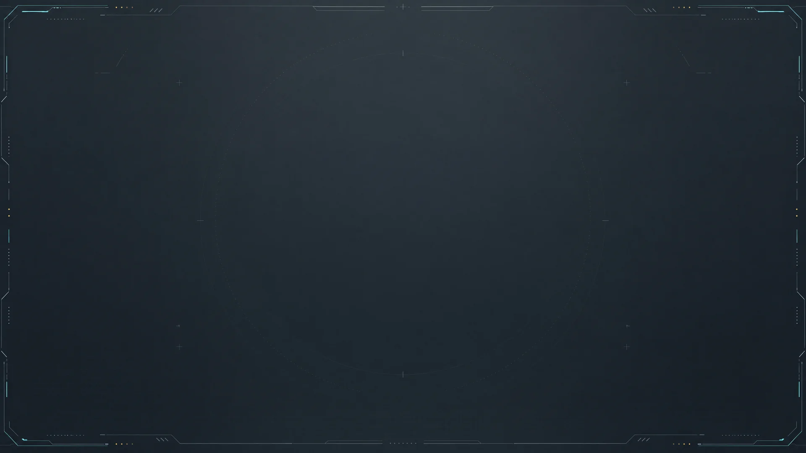
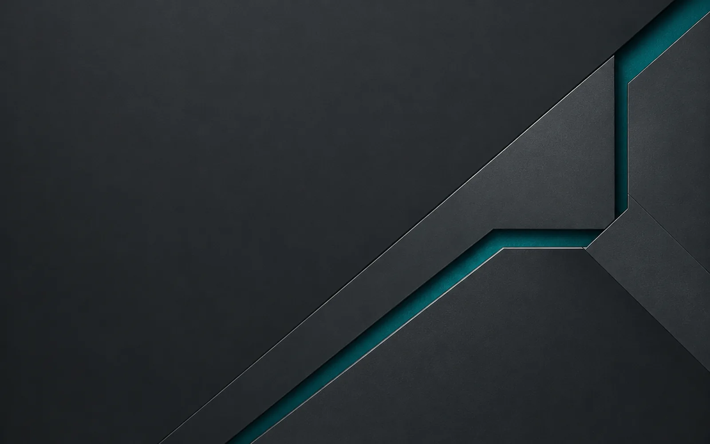

品牌图形
QX-BRAND-01 · 深色背景版 · 同源透明轮廓
QX-BRAND-01 · 浅色背景版 · 同源透明轮廓
QX-BRAND-02 · 24 / 32 / 48px 轮廓与应用图标
态势大屏

QX-WALL-01 · V3 平面底图 · 3840×2160 版本 · 用户提供的 4K 源图，无本地放大 · V2 舱室背景保留
QX-WALL-02 · 1920×160 · 透明页头两翼
QX-WALL-03 · 1024×1024 · 256px 重复平铺预览
登录与空状态

QX-AUTH-01 · 1600×1000 · 从原图裁切并派生
QX-EMPTY-01 · 384×288 · 透明插画